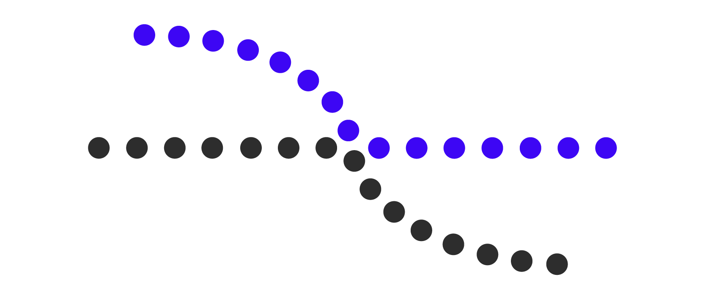
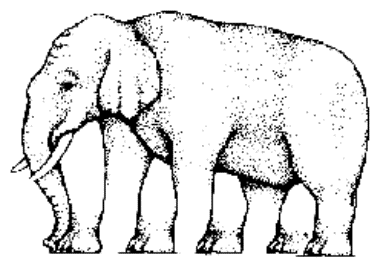
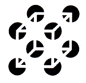

Ley de movimiento común
En igualdad de circunstancias, tendemos a percibir como grupo o conjunto aquellos elementos que se
mueven conjuntamente o se mueven
del mismo modo, o que se mueven reposadamente respecto a otros.
Se constituyen en unidad aquellos elementos que se mueven juntos de manera similar, o en oposición a
otros que se encuentren quietos o estáticos

Siguiente Ley
Ley de la pregnancia o de la ''buena forma''
En igualdad de circunstancias, tendemos a percibir como unidad aquellos elementos que presentan el
mayor grado de simplicidad, simetría,
regularidad y estabilidad (buenas formas).
Se constituyen en unidad con mayor facilidad aquellos elementos de mayor regularidad, conexión,
simetría, equilibrio, homogeneidad, máxima simplicidad y concisión.

Siguiente Ley
Ley de buena continuidad
En igualdad de circunstancias, tendemos a percibir como parte de una misma figura los estímulos que
guardan entre sí una continuidad de forma.
Aquellas partes de una figura que tengan un destino común se constituyen en unidad con mayor
facilidad que las otras.

Primera Ley